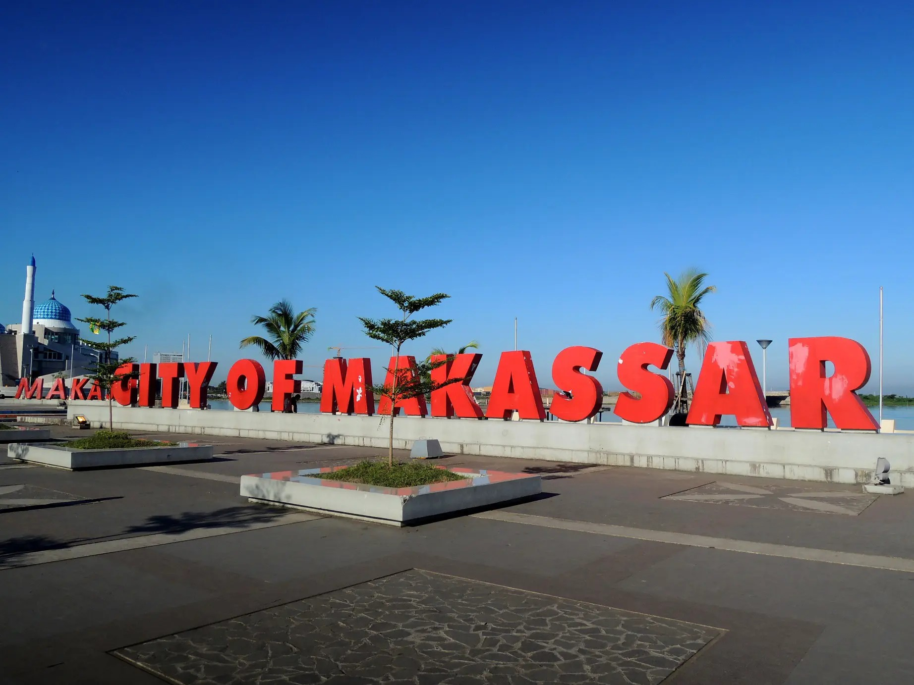

Selamat Datang di Website Makasar
Temukan informasi menarik tentang Makasar: sejarah, budaya, kuliner, wisata, berita, dan galeri multimedia!
Ingin tahu lebih banyak tentang Kota Makassar? klik dibawah ini ya

Profile
Kenali Makasar lebih dekat: sejarah, budaya, dan kehidupan masyarakatnya.
Lihat Profile Kota Makassar →Galeri Foto
Kumpulan foto terbaik dari berbagai sudut kota Makasar dan destinasi wisatanya.
Lihat Galeri →

About Us
Website ini dibuat oleh mahasiswa semester 2 untuk tugas UAS, menyajikan informasi Makasar secara modern dan informatif.
About Us →